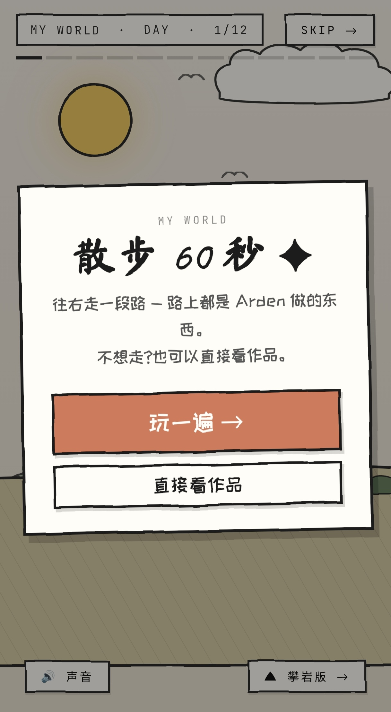
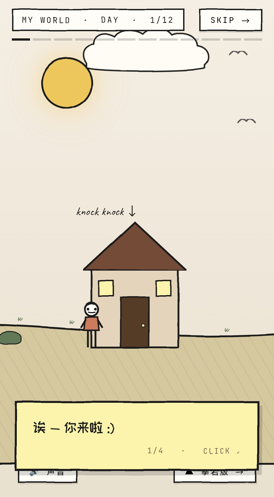
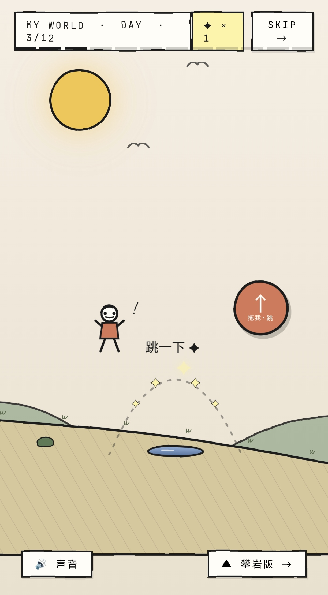
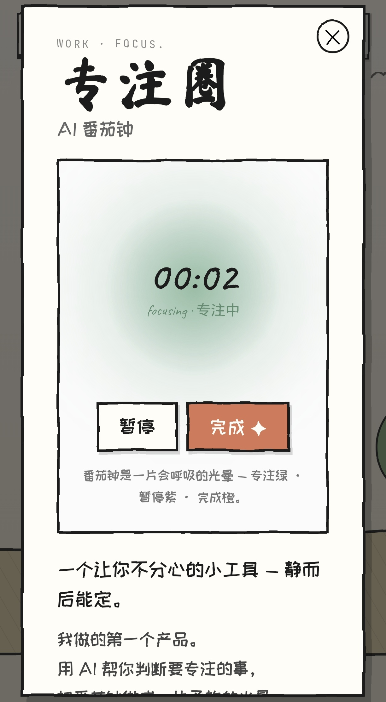
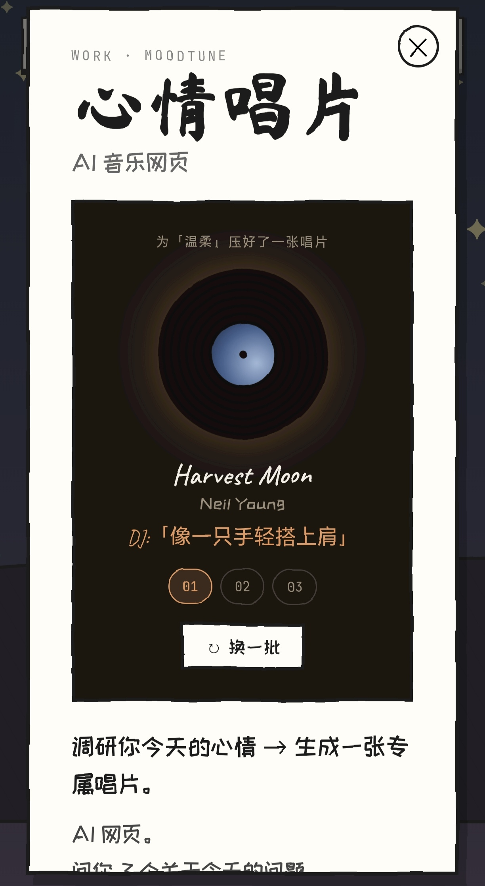
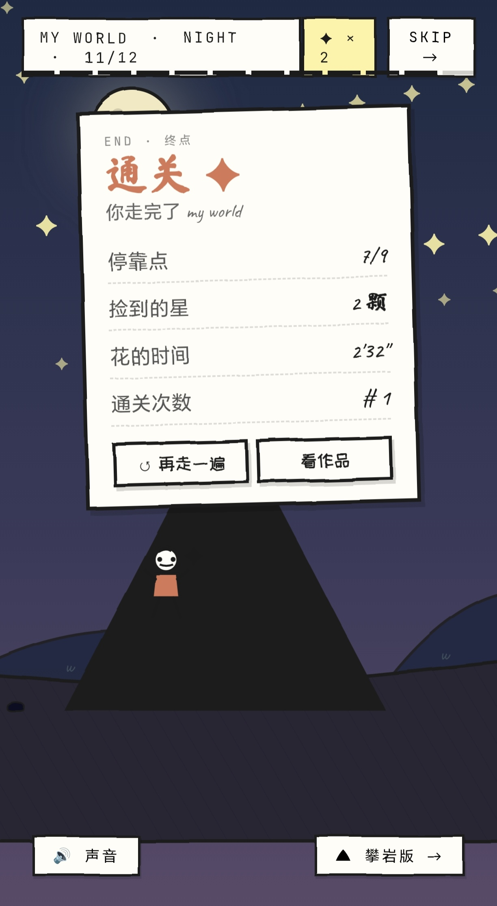

坐到书桌前打开屏幕 — 启动专注圈 AI 番茄钟。
一个可以走的作品集网页 — 横向卷轴 + 路边对话 + 不难的小关卡。
路上有两件可玩的产品、一面涂鸦墙、几个想法、一个终点 ✦
急的人随时可以跳过散步直接看作品。
≈ 60–90 秒。横向卷轴 + 路边对话 + 不难的小关卡。
access skip 在右上角 — 急的人随时可以跳到「全部作品」。






不是 portfolio 列表，是一段可以漫游的世界。每个停靠点都是一件作品或一段想法。
横向卷轴 · 视差三层背景 · 物理跳跃。点屏幕走路，按 ← → 也行；路上还藏着 4 颗星星。
12 个停靠点 — 敲门、关于、灯笼、邮筒、信箱…… 每块招牌都能点开一段话，像边走边翻的日记。
专注圈、心情唱片 — 在路边就能 ▶ 小演示 试一段，再深入跳到完整介绍页。
六个能玩的小实验 + 一张终点统计卡片，记录通关时间和星星。
个人项目 · 设计 + 全栈开发 · 2026 · 约 3,000 行代码 / 一个长周末
requestAnimationFrame 驱动 ~60 fps · 角色物理（重力 / 跳跃 / 地形起伏） · 视差摄像机跟随
feTurbulence + feDisplacementMap — 一行 CSS 全场抖动
localStorage 记住通关次数、跳跃按钮位置、探头小人停靠点
从打开网页到通关，只需要做三件事 — 选 · 走 · 看。
开场卡片两个按钮 — 玩一遍 → 或 直接看作品。
想散步的人开始往右走；急的人直接跳到全部作品页面。
点屏幕（或按 ← →）走路，路过招牌点开互动 — 敲门聊聊、跳过水坑、点亮灯笼。
路上遇到两件真正的产品，可以当场 ▶ 小演示 或 详细了解 → 跳到完整介绍页。
走到终点 ✦ 弹出一张统计卡 — 停靠点 · 星星 · 用时 · 通关次数。
再走一遍，从第二次开始路上会跟着一只小猫 :)
filter: url(#wobble)。改一次 baseFrequency 全站抖动幅度跟着变。朋友试玩后的建议 — 把作品放进一间收纳房间，每件家具都是一个互动点；走路版保留为另一种打开方式。
坐到书桌前打开屏幕 — 启动专注圈 AI 番茄钟。
走到唱片机旁，告诉它今晚的心情 — AI DJ 压一张唱片。
墙上挂着 6 张能点开的小作品 — 字母重力场、纸鹤、夜里的钟……
角落一面小攀岩 — 原计划的「攀岩版」收成涂鸦墙里的一个单独小游戏。
「走路版」保留为另一种打开方式 — 喜欢漫游的人可以照旧 60 秒走完。
右上角 / 设置里一键在散步 和 房间之间切换。
原本想做的「整套纵向攀岩版」复杂度太高 — 暂停。
把它的核心手感留下来，作为单独可玩的 mini-game 放进涂鸦墙里，不再要求走完全程。